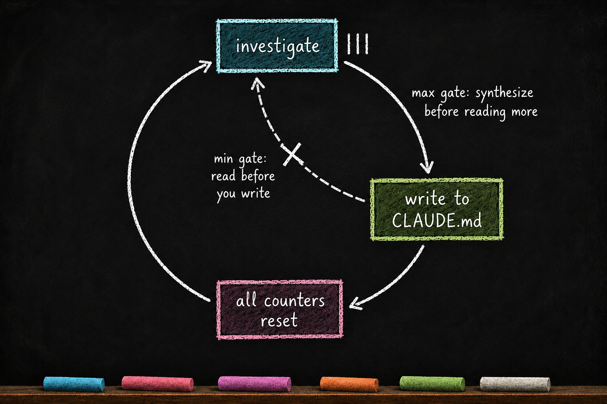

The Rhythm of Work
Essay 6.8 — The Markov Phasic Brain, Part 10 of 13.
Essay 6.7 closed the cycle. The cycle’s phases (currently five in the prototype) plus the cognitive metabolism organ — the seed agent now has the compartmentalized cognition the rest of the series has been building toward. What is left is the mechanism that lives inside every phase and paces the work itself.
This is where the phasic layer earns its keep — and where you, designing your own seed, will spend the most time tuning. The mechanism is small. The discipline it produces is large. And it carries no score, no dial, no number for the agent to chase. The seed’s pacing is built from tool-call counts and structural gates: some activities require another activity. That is the whole arithmetic.
The Ralph loop and the per-phase echo
Start with the Ralph loop. The pattern is familiar to anyone who has tried to keep a CLI agent on task: an agent finishes a few moves, decides it is done, calls Stop, and quits — even though the work is not actually finished. The fix that emerged in the broader agent community is to refuse the stop. The agent calls Stop; the system intercepts; the agent is returned to the prompt and told to keep working. The loop runs until the work is genuinely done.
The seed agent adopts the Ralph loop through the job system. Every job carries a status. The always-on layer’s stop-gate hook reads it on every Stop attempt; while any job is active or still pending, the stop is refused and the agent is returned to the prompt with a message explaining what is still in flight. Stop, refused. Stop, refused. The agent learns to keep working until the job formally completes. ⓘ
The transitions are explicit. Top-level jobs are born active and focused the moment the user’s prompt fires prompt-handler.sh — job.sh create-active is the hook-only entry point that bypasses normal creation gates. Dependent jobs are born pending via the CONDENSE-only job.sh create / create-dependent, and move to active only when the operator runs job.sh activate to switch focus. A job can be paused back to pending (loses focus) and re-activated later. ⓘ
The terminal move — active to completed — is gated: every depends_on ID on the focused active job must itself be completed, plus any required user and plugin-lock approvals, and the operator runs job.sh complete. The job’s status field cycles through the three working states — active, pending, completed — and the transitions are exactly what the Ralph loop needs to refuse Stop. There is one more status off to the side: voided, the terminal off-ramp for work that gets abandoned without ever being completed. It is not part of the working cycle — a voided job is kept on disk for its history but is finished with, so the Stop gate stops counting it. ⓘ
The phasic layer does the same thing one fractal level down — inside a single phase.
Every phase’s advance is gated. Try to cross a boundary before the phase has done its work and the commit script refuses, returning the agent with a message about what kind of work is still missing — a required commit section left empty, a reflection that has not run. Try to call Stop mid-phase and the same refusal fires. The gates are friction-by-design — a refusal layer that makes the seed agent slow down and do the work the phase exists to do, instead of rushing through phases to get to the next move. What those gates actually check is the subject of this essay: a rhythm that paces the work from inside the phase, and an exit gate that opens the boundary at the end. ⓘ

The min-max rhythm
How does a phase keep its work honest from the inside? Not through a score. Through a pair of paired gates — the min-max gate — that force a read-and-write rhythm against the working CLAUDE.md.
The min-gate blocks a CLAUDE.md write until enough investigative actions have accrued since the last synthesis. Read before you write — no synthesis lands without evidence behind it.
The max-gate blocks further investigative tools — reads, searches, web fetches, subagent dispatches — once too many actions have accrued without a write. Synthesize before you read more — no runaway reading without writing anything down.
Together they bracket the agent into a cycle: accrue from zero up to the ceiling, write — which resets the count — then accrue again. The min-gate forbids premature synthesis; the max-gate forbids investigation sprawl. ⓘ
The counting is per activity class. Bare tool-call counts replace any notion of a score, but the rhythm is class-aware: each kind of activity carries its own update-requirement — every so-many reads call for a CLAUDE.md update; every subagent run calls for its own. The composition rule keeps it simple: per-class counters, one reset event. A CLAUDE.md update resets every class counter at once — the write is the synthesis moment. Whichever class hits its threshold first forces the write, and the write clears the whole board, so mixed action sequences compose naturally with no special cases. ⓘ
Each phase tunes the rhythm to its own dominant work. Every phase enforces both gates — the anti-dodge property is that there is no phase without the rhythm — but the class thresholds differ per phase, so each phase’s dominant activities are the ones that drive its CLAUDE.md updates: OBSERVE’s reading, EXECUTE’s building, CONDENSE’s routing. The floor sits lower in OBSERVE, where discovery is cheap and broad reading before the first note is encouraged. And the gates fire for the main session only — a dispatched subagent can bulk-read without tripping the rhythm, which is exactly what keeps the delegation economy of Essay 7.6 viable. ⓘ
The agent never hears about counters. The coaching voices speak the language of the work — read before writing, synthesize what you have gathered — and the block message, when a gate fires, names the kind of work the phase still wants. The arithmetic belongs to the orchestrator; the experience is just the friction.
Entry: coached, not gated
A phase’s entry carries no ceremony. There is no dial to set, no declaration to file, no act the machinery checks before the tools open. The seed enters a phase already carrying its context — the working CLAUDE.md layer, or the just-injected compaction file from the always-on cortex — and the entry voice orients it: stay focused on this phase’s kind of work, produce the shapes the gates will ask for, orchestrate the phase’s subagents.
Thinking about the phase’s expected depth — how heavy will this be, how many subagents, how much reading — is part of that coached orientation. It is useful cognition the voice prompts, not a step the machinery verifies. The depth intuition also informally sizes how much of the phase’s work gets delegated. ⓘ
The real friction sits at the exit.
The exit gate
The condition that opens a phase boundary is the three-family exit gate — evidence the phase reflected on its own work, checked at the force-advance commit. Essay 6.2 drew it across all five phases; here is the shape once more, because it is the door every rhythm in this essay leads to.
Family one: the phase’s reflection commands ran — named in-session operations that write the phase’s slice of the cycle’s compaction file. Family two: new marked notes were left in the working CLAUDE.md for CONDENSE to harvest later — a soft nudge, not a hard block. Family three: at least one of the phase’s reflector subagents actually ran and left a receipt. ⓘ
The minimums are deliberately variable. Each phase entry draws its required counts from a small set — the same random-from-pool selection the coaching voices already use — so the friction cannot be gamed to a constant, and the operator can observe its impact. The reflection commands themselves come in two tiers: a constitutive CORE pair that runs in every phase (a quality self-assessment, and a scan for coaching the phase’s own voices could do better), plus a regulated layer of mental-model lenses the variable minimum draws against. ⓘ
CONDENSE is the most-gated phase of all — fitting, because it is the brain’s learning phase. It clears the exit gate and keeps its own eighty-percent deflation target from the CONDENSE essay. And because CONDENSE consumes the cycle’s marks rather than leaving new ones, the new-notes family does not gate it — its marker-side discipline runs in the consumption direction instead.
The gate is a floor
Every gate in this essay is a floor, not a target. The agent satisfies a gate through the phase’s real work, and it is meant to keep working past the floor whenever the work still needs more. The upper side is deliberately unguarded — no over-work penalty, no waste in doing more than the minimum, because no minimum was ever the thing being chased. ⓘ
The anti-rush pressure never comes from a number. It comes from coaching that speaks the language of the work — observe more, hunt the blindspots, analyze deeper, change your lens, double-check the claim. The voices and injections never mention counters or thresholds directly. The agent never hears "you are short on a count." It hears what kind of work the phase still wants — so phases advance with completed work, not satisfied numbers. ⓘ
Put the pieces together and the phase has two bookends. The entry voice opens the phase operationally — here is your kind of work, here are your subagents. The exit gate closes it metacognitively — show me you reflected before the boundary opens. The stretch between is the rhythm: accrue, write, reset, with the floor underneath and the coaching overhead. ⓘ
Persistence across rollbacks
The rhythm’s bookkeeping behaves a level below all this in a way architects should know about. Backward transitions preserve recorded work; only a completed forward advance closes a phase’s entry. Each phase entry carries a forwarded flag, flipped true only by the force-commit handshake at a successful forward advance. A backward transition never flips it. ⓘ
So when the agent enters VERIFY, does half its audit work, then rolls backward to EXECUTE to fix a small thing — the VERIFY entry was never closed. When the cycle flows forward again, the phase resumes that same entry, its recorded state intact, the remaining gap unchanged. Only revising completed work — backing into a phase whose entry was already closed by a forward advance — appends a fresh entry. The agent does not lose work to a rollback; it loses only the time spent fixing what made the rollback necessary. ⓘ
A worked example
Picture the same multi-cycle plan-job we have been tracking — the migration of a large body of work from one repo to another — at two different moments. The job is the same. The rhythm is the same machinery. What differs is the shape of the work, and the rhythm bends to it.
Cycle 1, OBSERVE. Working memory is nearly empty. The injected context is a one-line objective. The agent has never touched the target repo. The entry voice orients it toward breadth: map the project, find the contradictions, walk the prior knowledge, dispatch parallel research subagents. The agent fans out two observe-subagents and starts reading. A dozen reads in, the max-gate fires: synthesize before reading more. The agent writes what it has learned into the working CLAUDE.md — the write resets every counter — and goes back to reading. Accrue, write, reset, for as long as the investigation genuinely runs. When the phase finally reaches for the boundary, the exit gate asks for its evidence: the reflection commands run, the blindspot reflector leaves its receipt, the marked notes are staged for CONDENSE.
Cycle 3, EXECUTE. Three cycles later, the same job enters EXECUTE for a surgical task. The plan named one altered-list directory and a single hook update. The agent makes the edit, records the execution note, commits at the checkpoint. A handful of actions, one synthesis write, done — the rhythm never even approaches its ceiling, and nothing penalizes finishing early on honest work. But the exit gate does not shrink with the task: before the boundary opens, the drift-auditor reflector still reads what was actually changed against what the plan declared, and the reflection still lands in the compaction file. ⓘ
Same job. Same machinery. A deep phase fills through real volume; a surgical phase finishes early and clean. In both, the boundary opens the same way — on evidence of reflection, never on volume alone.
What you would customize
The rhythm is one of the architectural surfaces with the most room for an architect’s opinion. The mechanism is small enough that the customizations are pointed.
The architect would tune the per-class thresholds, per phase. The prototype calibrates them against its own tempo — a lower read-floor in OBSERVE, heavier write-classes in EXECUTE. A seed doing legal research, where each "read" is a long document, would raise OBSERVE’s read-class threshold so the rhythm asks for synthesis less often; a seed doing rapid code patches would tighten EXECUTE’s. The thresholds live in each phase plugin’s config.conf; the discipline holds while the numbers move. ⓘ
The architect would tune which activities dominate which phase. The composition rule — per-class counters, one reset event — is the invariant; which classes a phase weights heavily is the opinion. A consulting seed might decide that in its intake phase, every client document reviewed calls for a note in the engagement file, while subagent dispatches run looser. The rhythm bends per domain; the write-as-reset moment does not.
The architect would extend the reflector roster. Family three of the exit gate asks only that some available reflector ran — the set is user-extensible, never one pinned name. A research seed adds a citation-checker reflector to VERIFY; a real-estate seed adds a comparables-sanity reflector to PLAN. Each one is another lens the exit gate can accept as evidence of reflection. ⓘ
What the architect would not do is surface the counters to the agent, or talk about the gates in the coaching. A visible count becomes a target; a target gets optimized; and the agent starts finishing gates instead of finishing work. The voices speak work-language on purpose — that choice is load-bearing, and every other knob in this section sits above it.
The honest design-limit is worth naming: the rhythm is friction, not mathematics — counters checked by hooks, voices injected at the block. A determined operator can enter gmode, the named off-cycle lane, to step outside the phasic system entirely and pay the deliberate-bypass tax of composing the justification; the discipline lives in the architect’s willingness to honor the rhythm rather than route around it.
The deepest payoff of the rhythm is the cognitive failure mode it prevents: the unpaced phase. An agent left unpaced either writes conclusions before it has read anything, or reads forever and writes nothing down — both are real failure shapes, and both die at the same pair of gates. The rhythm makes the read-write alternation structural; the exit gate makes the reflection structural; the floor-not-target principle keeps all of it pointed at the work instead of the numbers. The friction is the pedagogy. The rhythm is the compartment.
What comes next
Phases give the agent compartmentalized cognition. The CLAUDE.md layer from the Essay 5 series is the working-memory form they write that cognition into — the surface where each cycle’s tokens land before CONDENSE absorbs them into longer-term memory. Together they form a working brain — one that observes before it plans, plans before it builds, verifies before it consolidates, and consolidates before it forgets.
This is what Essay 1 was reaching toward when it claimed the agent is the filesystem. The filesystem holds memory. The phases discipline what the agent does with it. The two ideas only fully resolve when you see them together.
Stretch one cycle into many, chained, and you get the long-horizon discipline Essay 8 is about — multi-cycle jobs where the rhythm gates, the plan-file contract, and the seven-step waterfall keep the agent honest across days, not just minutes. The mechanisms in this essay are designed to scale up that way without losing their grip.
But a phase is itself a plugin. So is the orchestrator. So is everything that runs in the always-on layer. The brain’s growth — the brain’s capacity to grow — depends on a standardized way of building, packaging, and evolving plugins.
The phases and the waterfall are mechanisms. How do you BUILD a new phase that fits this design?
Next.
Essay 6.8 — The Markov Phasic Brain, Part 10 of 13.
Previous: Essay 6.7b — CONDENSE — What It Uniquely Owns — the job graph CONDENSE mutates, the dependency-removal moves, and the reflection that closes the phase. Next: Essay 6.9 — GMODE — The Off-Cycle Lane — the operator’s deliberate maintenance lane that lives outside the OPEVC cycle.
Comments